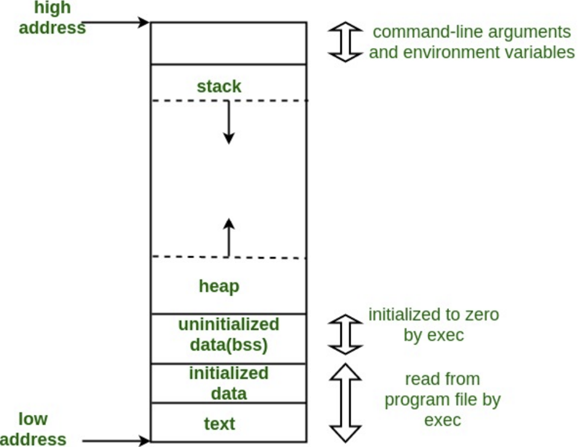
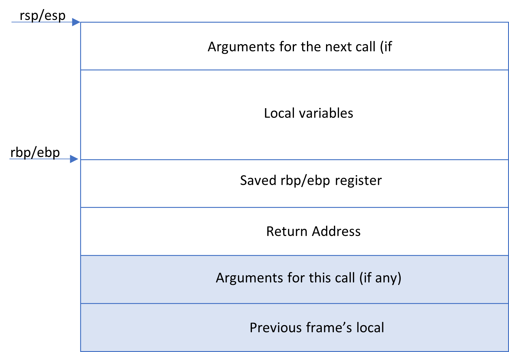

For those of you who are clueless about how to go about the binary analysis/reverse engineering/memory corruption challenges in CTFs, I hope that this article will give you enough background knowledge to get started.
What you may need to follow along –
- Linux system (Refer - https://linuxhint.com/install_ubuntu_virtualbox_2004/ )
- Python 3.6 or higher (Refer - https://tecadmin.net/install-python-3-6-ubuntu-linuxmint/ )
- gdb-gef (Refer - https://gef.readthedocs.io/en/master/ )
- 4. ghidra (Refer - https://malware.news/t/install-ghidra-10-0-1-on-ubuntu-20/51061 )
- 5. pwntools (Refer - https://docs.pwntools.com/en/stable/install.html )
Now that you have the required tools, let’s get started with the basics. For our purpose, we’ll be looking at x86-64bit intel architecture.
Normally for binary analysis, all you’ll be given is a binary file. There are two ways you can understand what the binary program is doing. We can either look at the assembly code directly and try to figure it out or reverse it to get something close to the original source code. Assembly approach is relatively harder and needs a significant understanding and experience with assembly programming. While reversing the binary with tools such as ghidra or IDA-pro is much easier, it might not always be possible. But for now, let’s assume that it’s possible to get the reversed code. We can look into the assembly approach later.
So the first step is to load the binary into a tool such as ghidra. Ghidra is open-source free to use tool that offers very useful functionalities. You can follow this article https://www.issp.com/post/reverse-engineering-with-ghidra to understand how to load the binary into ghidra.
Alright, now you have something that looks like the source code. Mostly these are in C programming language. You would need some understanding of C to figure out what the vulnerability is. In most cases, the vulnerability would lead to memory corruption either by exploiting the stack or the heap. To understand better what exactly I mean, you’d need to understand how the program is loaded into the memory for execution.
The above image (Refer - https://www.geeksforgeeks.org/memory-layout-of-c-program/ ) shows the structure of a program in the computer memory. The stack is used to store function calls, initialized variables, arrays and arguments passed to the program. We need to understand the exact structure of a function call in the stack. But before that, let me give you a brief background on registers.
A register is a small data holding place. It is a very fast memory and makes it very convenient for computers to execute programs. It is used to quickly store, transfer and operate on data based on instructions (assembly instructions). Lets look at the registers available to us in x86-64 architecture. The registers here can hold 8/16/32/64 bits of data at once.
CPU General purpose registers
- 8 bit registers – AL, BL, CL, DL, AH, BH, CH, DH
- 16 bit registers – AX, BX, CX, DX
- 32 bit registers – EAX, EBX, ECX, EDX
- 64 bit registers – RAX, RBX, RCX, RDX, R8, R9, R10, R11, R12, R13, R14, R15
CPU special registers
- SP/ESP/RSP – Stack Pointers. They are incremented/ decremented with push/pop instructionsH
- BP/EBP/RBP – Stack Base Pointer/ Frame Pointers. They are used to keep track of the stack pointer values when function startsX
- IP/EIP/RIP – Instruction Pointers. They point to the next instruction to be executed
- SI/ESI/RSI – Source Index Pointers. They are used to as source index for string operations
- DI/EDI/RDI – Destination Index Pointers. They are used as destination index for string operations
- Flags – Automatically set by mov, cmp and other instructions. They are used to determine jumps
- CF: Carry Flag
- ZF: Zero Flag
- SF: Sign Flag
- OF: Overflow Flag
Now that we know about registers, we can try to understand the calling conventions when a function call is made. The calling conventions tell us how parameters are passed between caller and callee functions and what registers need to be saved. For a function call, ‘Stack’ is the memory region that we need to look at. The stack here works similar to the data structure where the rule followed is ‘first in last out’. A stack grows from higher memory address towards lower memory address.
A stack is composed of something called ‘Frame’. Frames are pushed on the stack as a consequence of function calls. Base Pointer/ Frame Pointer points to the address of current frame (ebp/rbp). Each frame contains the following things –
- Arguments passed to the function (function parameters)
- Return address to go back to once the function is executed
- A pointer to the previous frame
- The local variables declared inside the function
The stack of a function can be seen in the diagram below –
Process:
- Before a function call takes place, the function arguments are pushed onto the stack. Pushing an address on stack is equal to decreasing the stack pointer by 8 (or 4 for 32bit) and copying the address into the new location of the stack pointer. This is called ‘function prologue’.
- Next the instruction pointer (rip/eip) points to the address of the function. The address of the instruction that immediately follows the function call instruction, is pushed on the stack next. This is the ‘return address’.
push [return address] - Next on the stack is ‘saved rbp’. This is the value of previous rbp. This is saved so that it can be restored later and the stack can pivot back to the original stack of the caller. After this, the current rsp (where the stack pointer is pointing now) becomes the rbp for the current stack.
push rbp
mov rbp, rsp - Now the stack can be used for all the local variables declared in the function.
- If there are function calls inside the function call or a recursive function, then the stack grows in the similar fashion.
- At the end of the function execution, the rbp value of the caller is restored. Then the execution returns to the return address. These steps together is called ‘function epilogue’.
mov rsp,rbp
pop rbp
ret
With this background, we are ready to move on to more interesting topics such as buffer overflows and memory corruptions.